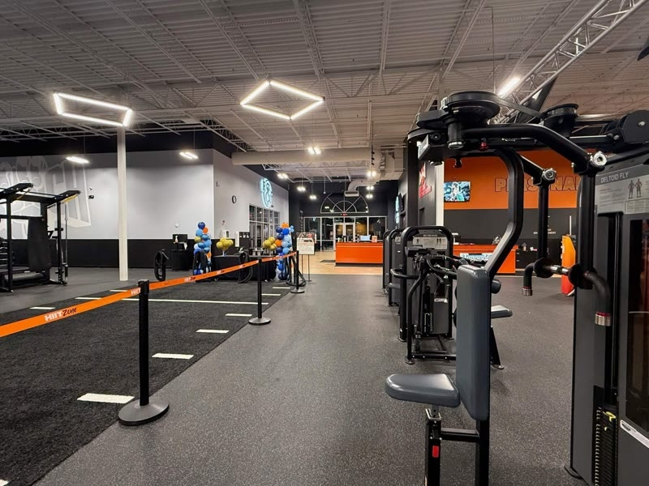
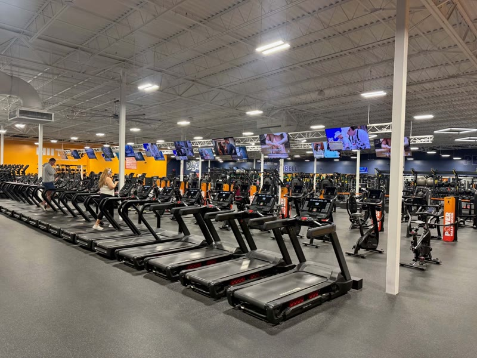
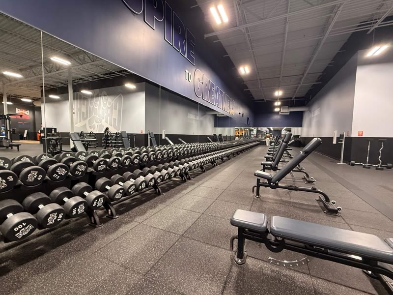
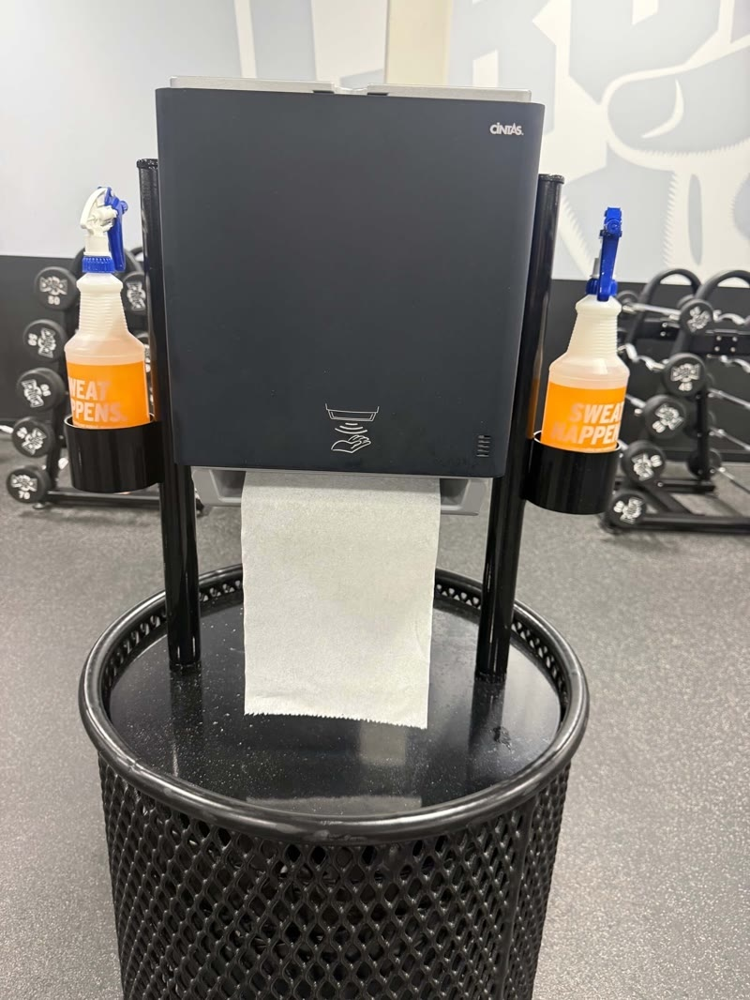
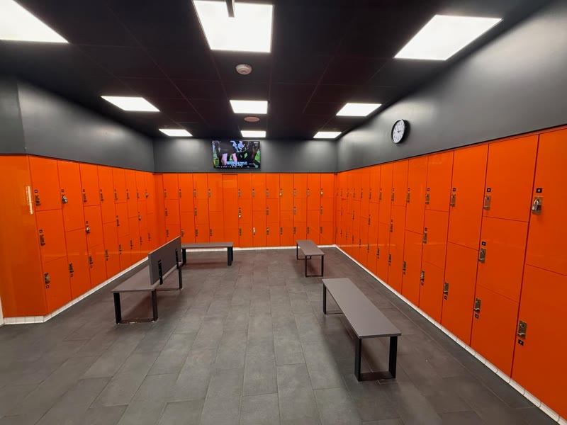
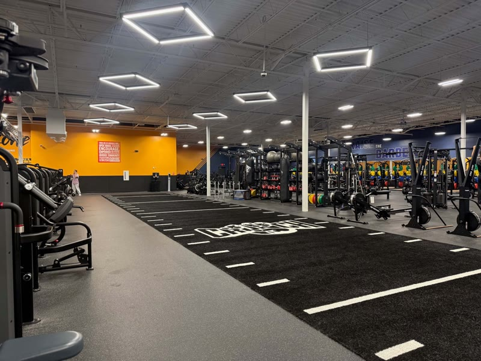
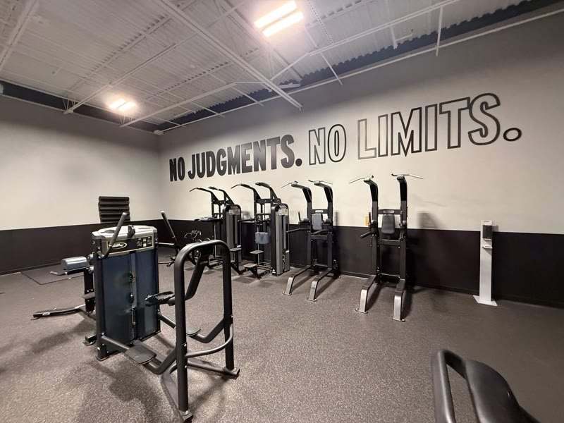
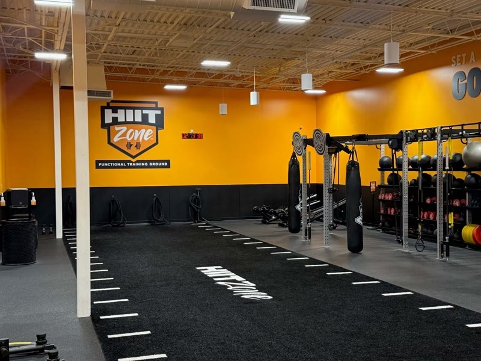

November 24, 2026
11 P.M. at Crunch Southpark Meadows
Posted in Austin
When I was getting ready to leave Los Angeles, I made a list. It wasn't a long one, because by then I'd already given away most of what I owned and I was in a pretty ruthless mood about what actually mattered. Good tacos within driving distance. A place Lola could run. And a gym that never closes.
That last one was the whole deal, honestly. I'd have given up the tacos first.
I work out at 11 p.m. Seven nights a week. The habit started about seven years ago, back in Los Angeles, at 2 in the morning, and I won't pretend it started for healthy reasons. I was hiding. The gym at 2 a.m. was the one place my demons didn't seem to follow me, or if they did, they couldn't keep up. Somewhere along the way the hour slid back to 11, and the hiding turned into something else. So every house I looked at in Austin got measured against one question before I even walked through the front door: how far is it to a gym that's open at midnight?
The answer turned out to be Crunch Fitness at Southpark Meadows. I'd sign up again tomorrow.
A furniture store, of all things
So I gave away every stick of furniture I owned to move here, and the gym I ended up picking lives inside an old Conn's, the furniture and electronics store, out on the I-35 frontage road in the Southpark Meadows shopping center.
Where people used to wander around looking at recliners and big-screen TVs, there's now a floor full of squat racks and cable machines. I still laugh about it. Lola, who has never sat on a recliner in her life, is unmoved.
Crunch opened this location on September 17, 2025. Vince Young came out the night before to sign autographs at the preview, which tells you something about how Austin does a grand opening. It's a big building, roughly 40,000 square feet, with enough space between the machines that you're never doing curls in somebody's armpit.

What 11 p.m. looks like
If you've ever tried to park at Southpark Meadows at 6 on a weeknight, you know. Between about 4 and 8, that lot is a contact sport and the gym floor fills up right along with it.
At 11, it's a different place.

The lot's mostly empty except for a handful of cars parked close to the door. Inside, the lights are on, the music's going, and there's someone at the front desk, because they keep staff on all night. When you're walking in from a dark parking lot at 11, a person behind that desk is worth a lot. I never have to wait on a bench or a rack. I can do my whole routine without doing that awkward hover-and-ask thing. The few of us who are there at that hour have a kind of nod we give each other, the night-shift nod. Nobody talks much. Everybody's working.

And it's clean, which I did not expect at that price. The equipment's in good shape, the floors aren't sticky, and the locker rooms don't make you want to shower again when you get home. Reading through the online reviews, that's the thing people mention over and over, along with how much room there is between machines.


The math
This is where I get a little evangelical.
The Base membership is $9.99 a month if you sign up for a year, or $15.99 month to month, and it gets you through the door at any hour of the day or night. Ten bucks. For a 24-hour gym this clean and this well equipped, I honestly don't know how they make the numbers work, and I've decided not to ask.
If you want the recovery perks, Peak Results runs $36.99 a month and adds HydroMassage, the dry sauna, red light therapy and tanning. (There's a middle tier, Peak, at $26.99.) After a heavy leg day at 11:45 at night, fifteen minutes in that sauna and ten more letting a HydroMassage bed work over my back is, I'm not kidding, the best part of my day. One decent massage in this town costs more than a month of it, easy.
A small piece of advice, since I've read the same reviews you have. Read the contract before you sign it, especially the part about the annual fee and how to cancel. I'd say the same about any gym in town.
Why it works for me
I think the real reason I love this place has less to do with the equipment than with what a gym has turned into for me.

Somewhere in those seven years it stopped being a hiding spot and became my temple. (Yes, I know that's a lot to put on a building that used to sell washing machines.) But at 11 p.m. nobody needs anything from me. The emails are answered, Lola's been walked, and nobody taps me on the shoulder to ask if I'm almost done with the bench. Between sets, if I feel like it, I close my eyes for a minute and just follow my breath, the same thing I do on the cushion, only with a 45-pound plate leaning against my shin. Then I pick the bar back up.

It's not optional anymore. It's the one appointment I keep every single day. By the time I walk out to the car around midnight, whatever was rattling around in my head has usually rattled itself out.

When I made that list in Los Angeles, I didn't know what I'd find. I just knew I needed a light on at 11 p.m.
Crunch Southpark Meadows has kept that light on for me every night since, for about what I'd spend on two breakfast tacos and a coffee.
Crunch Fitness Austin Southpark Meadows, 9900 S. I-35 Frontage Rd., Suite H, Austin, TX 78748. Open and staffed 24/7.
Sources
- Crunch Fitness, Austin Southpark Meadows: address, 24/7 staffed hours, and tier prices as listed on Nov 24, 2026
- Longhorn legend to kick off preview of Austin's new Crunch Fitness gym, CultureMap Austin: Sept. 17 opening, Sept. 16 preview, the old Conn's building, Vince Young
- Crunch Fitness leases gym space at SouthPark Meadows III, CoStar: 40,400-square-foot lease
- Review summaries from Birdeye (3.8 stars, 201 reviews), Yelp and Google, read Nov 24, 2026: cleanliness, space, crowds from 4 to 8 p.m., billing complaints
Note: I wrote every word of this one myself — AI helped with the editing. The hero image is an AI-generated illustration, not a photo; the photos inside the gym are mine.
More writing
- November 22, 2026
Say Nothing, and Mean It
You read the long angry message at 11:52 at night, wrote three replies in your head, and sent none of them.
- November 21, 2026
The Quiet Kind of Strong
The strongest people I know show up, hold it together in public, then sit in the truck for twenty minutes before going inside.
- November 20, 2026
Why I gave up all my furniture — and why I'll never go back
The movers wanted $14,000–$20,000 to move my furniture from LA to Austin. I gave away 95% of it.
- November 18, 2026
Why I started this site
I retired in January and started learning to build on the web with AI. This site is where I practice.